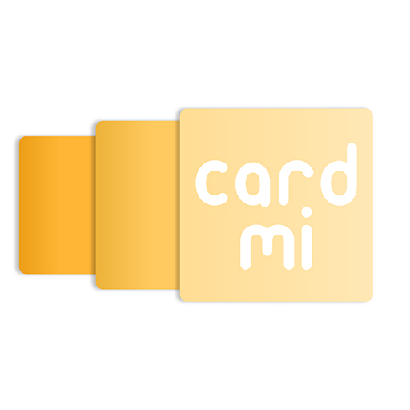
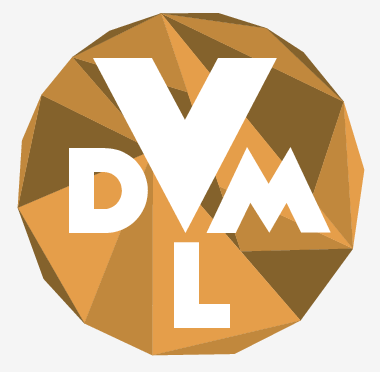

CardMi is a flashcard app that provides all the basic features necessary for effective study,
including a minimalist environment for focus, the option to mark terms as studied, and sort and shuffle your deck to mix up your routine.
Coded in Java with Android Studio.

Inspired by a desire to find practical solutions to improve the lives of the creative community,
"For the Lost Creative" by Creative Baggage is a curated database of free opportunities for musicians and artists.
Coded with Javascript and Velo by Wix. Opportunities populated using Python web scraping scripts.
A web app used at University of Pennsylvania's Vitale Digital Media Lab
to automate repetitive workflows and store, analyze, and visualize data. Built with Python/Flask and SQLite. (In Progress)

Performance
Hegemony of the Food Chain
Arrangement of an orchestral soundtrack from Hunter x Hunter for a quartet.